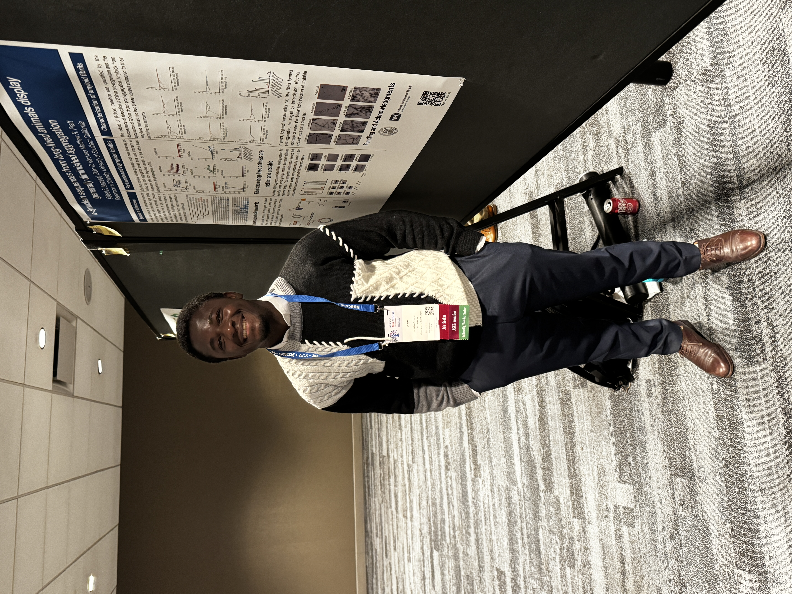

About
I am a protein chemist and chemical biologist working at the intersection of protein semisynthesis, biophysics, and cell-based assays. My research uses solid-phase peptide synthesis, recombinant protein expression, and chemical probes to understand how sequence and post-translational modifications control protein aggregation and function in disease. I have authored peer-reviewed publications and received several fellowships and awards, including the William Anderson Research Impact Award. I am especially interested in extending this foundation toward chemical proteomics, mass spectrometry, and translational drug discovery.

Protein Chemist & Chemical Biologist
- Affiliation: University of Southern California (USC)
- City: Los Angeles, USA
- Affiliation: NOBCChE
- Degree: Ph.D. in Chemistry (October 2026)
- Affiliation: American Chemical Society (ACS)
- Affiliation: Ghana Chemical Society (GCS)
8
Publications peer-reviewed
3
Research projects featured
206
Citations Google Scholar
Skills
Selected technical expertise